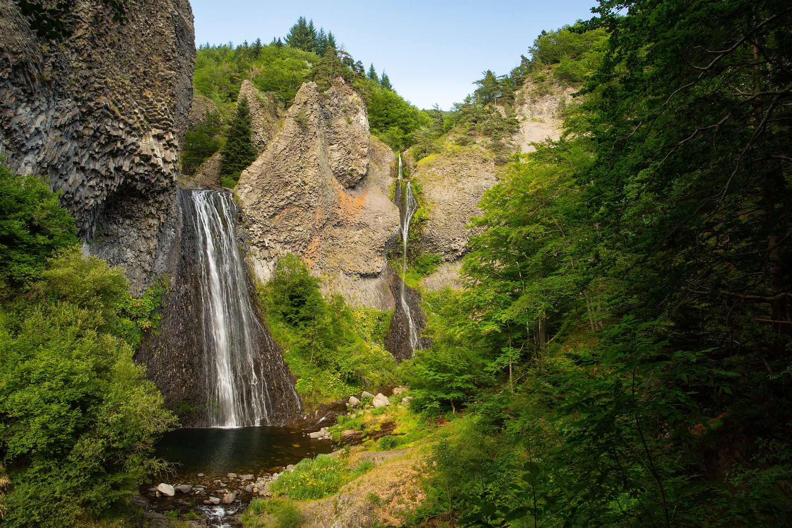
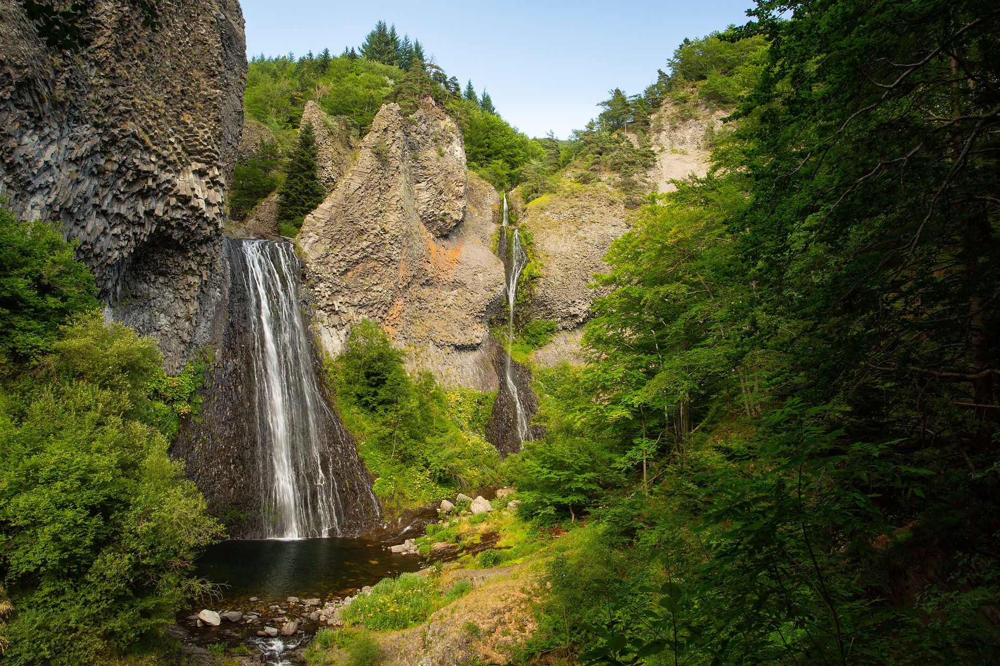

Activités locales
Nous vous proposons une sélection d'activités aux alentours de nos gîtes, toutes testées et approuvées par vos hôtes et leurs proches.
Pour en découvrir plus sur notre belle région, rendez-vous sur le site d'Ardèche Tourisme
Ardèche Tourisme
 

↓ Cliquez sur les catégories ci-dessous pour découvrir notre sélection. ↓
Activités en Famille
Nature et Plans d'Eau
Restauration
Produits Locaux
Activités en Famille
Le Mastrou
Train touristique
Embarquez à bord du Mastrou, ce train authentique du XIXème siècle, et traversez les paysages sauvages de la valée du Doux. Des gorges au plateau Ardèchois, vous traversez les vergers et châtaigneraies en franchissant ponts, vadiucs et tunnels.
 Gare de Tournon-Saint-Jean-de-Muzols
Gare de Tournon-Saint-Jean-de-Muzols
 1h20
1h20
Eyrieux Sport
Location de vélo, canoë/kayak, paddle
Envie de bouger pendant vos vacances ? Eyrieux Sport est là pour vous. Parcourez la Dolce Via à Vélo ou à bord d'une Rosalie, descendez les rapides et les toboggans de l'Eyrieux en canoë kayak ou initiez-vous au stand-up paddle au plan d'eau des Ollières-Sur-Eyrieux.
Les Ollières-Sur-Eyrieux
15 min
Aquarock Aventure
Parc aventure, accrobranche et via ferrata
Aquarock Aventure n’est pas un simple accrobranche, c’est un parc aventure au dessus de l’eau et sur les rochers. Situé dans la vallée de l’Eyrieux, en Ardèche, le long de la Dolce Via, le parc propose 10 parcours avec deux tyroliennes géantes de 250 et 300 mètres. Accessible à tous, il vous offrira de belles sensations !
Saint-Michel-de-Chabrillanoux
15 min
Lugik Parc
Luges 4 saisons, location vélo et trotinettes

Si vous êtes adeptes de sensations et de paysages à couper le souffle, Lugik Parc vous attend. Découvrez un parcours de luge sur rail unique avec vue sur les Monts Alambre et Mezenc ou profitez d'une ballade en trotinette électrique, de jour ou de nuit.
Les Estables
1h10
Eyr'jeux Café
Boutique et salle de jeux
Rencontrez des passionnés de jeux de société dans cette boutique conviviale. Le café Eyr'jeux propose une salle de jeux en accès libre ainsi qu'une vaste gamme de jeux de société pour toute la famille, en vente ou en location.
Saint-Sauveur-de-Montagut
10 min
Eyrium
Base Aquatique
La base aquatique Eyrium vous propose un espace de détente et de jeux en famille en pleine nature. Profitez du grand bassin, des toboggans et des jeux d'eau et, entre deux baignades, faites-vous une petite partie de ping-pong, de mini-golf, de volley ou de pétanque.
Belsentes
35 min
Nature et Plans d'Eau
La Guinguette de la Plage
Plage de Fontugne
La plage de Fontugne vous offre un espace de détente et de baignade surveillée au sein d'une retenue d'eau en pleine rivière. La ginguette située juste au dessus de la plage vous propose un snack en continu, à partir de 12h, des concerts tout l'été et des séances de Yoga, Zumba, Pilate et Massages en journée ou en soirée.
Saint-Sauveur-de-Montagut
10 min
Plage de la Théoule
Baignade et Sports d'Eau

En plus des différents sports d'Eau qu'elle propose (voir Eyrieux Sport), la plage de la Théoule vous offre un espace de baignade (surveillée uniquement en Juillet en Août) en pleine rivière ainsi qu'un stand de glaces et de boissons frâiches.
Les Ollières-sur-Eyrieux
20 min
Plages du Pont d'Arc
Baignade et Paysage
Au cœur d'un magnifique paysage, découvrez les deux belles plages de sable en amont et en aval du Pont d'Arc. Profitez de votre séjour sur place pour visister Vallon Pont d'Arc, un village de caractère incontournable de l'Ardèche, mais aussi la grotte Chauvet 2 (réplique de la grotte Chauvet, désormais fermée au public) et le Chastelas.
Vallon Pont d'Arc
1h30
Cascade du Ray-Pic
Randonnée et Paysage
Besoin de vous rafraîchir ? Découvrez en pleine forêt la cascade du Ray-Pic et ses orgues basaltiques issues d'un volcan endormi. Un petit sentier en sous-bois d'une trentaine de minute vous conduira à ce coin de tranquillité ou vous pourrez admirer cette chute d'eau de 60 m de haut. Tout au long du parcours, des panneaux pédagogiques vous permettront d'en apprendre plus sur ce site naturel volcanique classé.
Péreyres
50 min
Mont Mézenc
Randonnée et Panorama
Gravissez le point culminant de l'Ardèche et découvrez ses panoramas époustouflants. Ancien volcan aujourd'hui éteint, le Mont Mézenc et ses deux dômes culminent à 1744 et 1753 m d'altitude et vous offrent une vue à 360° sur la région qui dévoile, par beau temps, le massif des Alpes et le mont Blanc. Un site de randonnée unique dans la région !
Borée
1h15